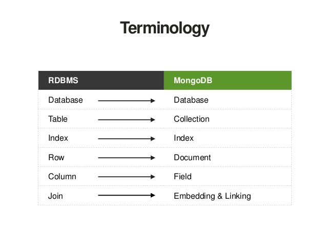

針對MongoDB的Create(Insert)與Delete(Remove)進行介紹並應用MongoDB .NET Driver實作
關於專案環境請先下面兩篇文章
MongoDB Data Model Overview
首先先看一下MongoDB的資料架構

Database
MongoDB中的每一個 databases 可以保存多個 collections. 而我們也可以指派設定相同或不同的user給予database存取的權限作為管理．
Collection and Documents
MongoDB 將每一個資料記錄透過 BSON 的格式做文件(document)儲存在指定的collection中
Compare with RMDB
這邊我們對比一下關連式資料庫的觀念：

MongoDB Write Operation Overview
在MongoDB中, 針對單一文件(single document)的寫入操作(write operation) 是處於基元((atomic)的狀態．
而atomic可以視為一種保護機制，基本上來講，是防止在寫未完成的時候被另外一個程序(thread)讀取而造成數據錯誤。
寫入操作(write operation)包含:
- 新增(Insert)
- 修改(Update)
- 刪除(Remove)
MongoDB Insert

MongoDB的 db.collection.insert() 那幫我們在指定collection中新增一份document．
新增資料到MongoDB中，每筆record都會自動產生一個_id的參數(文字格式)，這是系統產生的唯一值，是在做查詢與交易時最佳的遍尋值．而這個在MongoDB .NET Driver當中是特別指定欄位為ObjectId這個class．
MongoDB .NET Driver Create(Insert) Related Function
Basic Insert
public void Insert(Member dataObject)
{
this.Collection.InsertOne(dataObject);
}MongoDB Remove

這邊稍微注意一下，由於MongoDB針對Update與Delete提供一樣的條件參數(criteria或 conditions)與表態式(syntax)，如果有不懂的需要確認可以參考read operations
而預設MongoDB的 db.collection.remove() 行為則是移除所有符合條件的資料紀錄．
MongoDB .NET Driver Delete(Remove) Related Function
public DeleteResult Delete(string id)
{
var filter = this.GenerateFilterInput(id);
var result = this.Collection.DeleteOne(filter);
return result;
}
private FilterDefinition<Member> GenerateFilterInput(string id)
{
return Builders<Member>.Filter.Eq("_id", ObjectId.Parse(id));
}[補充] Member.CS
因為之後的新增, 查詢, 更新與刪除都會帶到這個class所以這邊在特別拿出來看一下
using MongoDB.Bson;
using MongoDB.Bson.Serialization.Attributes;
namespace MongoCRUD.Core.Pocos
{
public class Member
{
public ObjectId Id { get; set; }
[BsonElement("name")]
public string Name { get; set; }
[BsonElement("balance")]
public decimal Balance { get; set; }
}
}